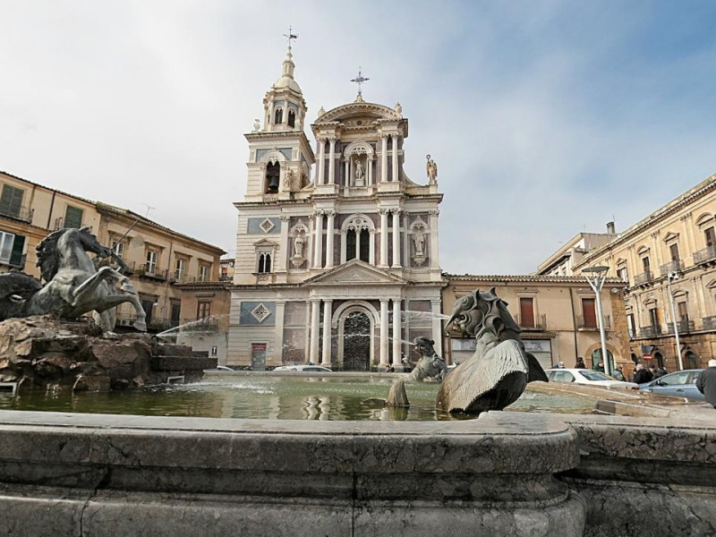

Caltanissetta — Il fulcro geometrico della Sicilia centrale.
Incrocio dei due corsi principali della città, questa storica piazza rappresenta il cuore geografico, sociale e monumentale del comune nisseno.

Posizionata al centro dello spiazzo nel 1956, l'opera in bronzo dello scultore Michele Tripisciano si ispira al mito marino, ritraendo un tritone che doma un mostro acquatico.
Costruita tra la fine del '500 e l'inizio del '600, domina la piazza con la sua elegante facciata affiancata da due campanili e custodisce splendidi affreschi del fiammingo Borremans.
Situata in posizione speculare rispetto alla Cattedrale, questa chiesa si fa notare per la sua bellissima ed eclettica facciata ottocentesca arricchita da colonne e statue decorative.
Antico convento carmelitano riconvertito nell'Ottocento, il palazzo delimita scenograficamente lo spazio della piazza fungendo oggi da storica sede del Municipio.